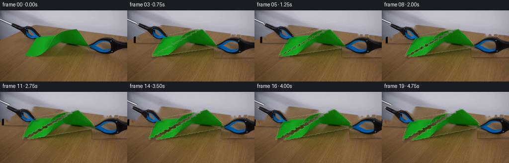
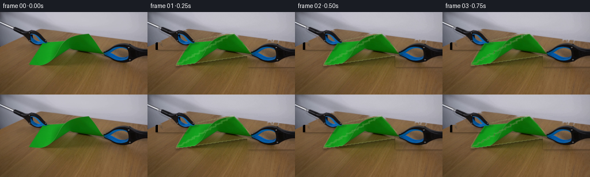

CODING AGENTS AS PIXEL WORLD MODELS
traex/DeepSeek-V4.1-Flash · 0045
点击播放 · 原生 RGB 像素
逐轮保存的候选
回放视频、检查图与代码变化。
每份候选均可单独播放。实际图片检查记录在下方工具轨迹中。
候选 01播放与检查图
点击播放 · 原生 RGB 像素


展开代码变化
--- 上一保存版本
+++ 本次保存版本
@@ -0,0 +1,333 @@
+from pathlib import Path
+
+import cv2
+import numpy as np
+from PIL import Image
+
+import artifact_io
+
+
+H, W = 144, 256
+N, FPS = 20, 4
+ROOT = Path(__file__).resolve().parent
+
+
+def smoothstep(x):
+ x = np.clip(x, 0.0, 1.0)
+ return x * x * (3.0 - 2.0 * x)
+
+
+def polygon_mask(points):
+ mask = np.zeros((H, W), np.uint8)
+ cv2.fillPoly(mask, [np.asarray(points, np.int32)], 255)
+ return mask
+
+
+def component_mask(candidate, seed, close=1, dilate=1):
+ candidate = candidate.astype(np.uint8) * 255
+ if close:
+ candidate = cv2.morphologyEx(
+ candidate, cv2.MORPH_CLOSE, np.ones((3, 3), np.uint8), iterations=close
+ )
+ count, labels, stats, _ = cv2.connectedComponentsWithStats(candidate, 8)
+ chosen = 0
+ best = -1
+ for index in range(1, count):
+ area = stats[index, cv2.CC_STAT_AREA]
+ contains_seed = labels[seed[1], seed[0]] == index
+ score = area + (1_000_000 if contains_seed else 0)
+ if score > best:
+ best, chosen = score, index
+ mask = (labels == chosen).astype(np.uint8) * 255
+ mask = cv2.morphologyEx(
+ mask, cv2.MORPH_CLOSE, np.ones((3, 3), np.uint8), iterations=1
+ )
+ contours, _ = cv2.findContours(mask, cv2.RETR_EXTERNAL, cv2.CHAIN_APPROX_SIMPLE)
+ mask[:] = 0
+ cv2.drawContours(mask, contours, -1, 255, cv2.FILLED)
+ if dilate:
+ mask = cv2.dilate(mask, np.ones((3, 3), np.uint8), iterations=dilate)
+ return mask
+
+
+def make_masks(frame):
+ rgb = frame.astype(np.int16)
+ r, g, b = rgb[:, :, 0], rgb[:, :, 1], rgb[:, :, 2]
+ low = rgb.sum(axis=2)
+ chroma = rgb.max(axis=2) - rgb.min(axis=2)
+ blue = (b > r + 24) & (b > g + 14) & (b > 68)
+
+ left_candidate = (((low < 285) & (chroma < 64)) | blue).copy()
+ left_candidate[:24] = False
+ left_candidate[65:] = False
+ left_candidate[:, :15] = False
+ left_candidate[:, 91:] = False
+ left_mask = component_mask(left_candidate, (56, 47), close=1, dilate=1)
+
+ right_candidate = (((low < 305) & (chroma < 72)) | blue).copy()
+ right_candidate[:50] = False
+ right_candidate[95:] = False
+ right_candidate[:, :174] = False
+ right_mask = component_mask(right_candidate, (196, 70), close=1, dilate=1)
+
+ # The green sheet is a perspective diamond. Its left and right tips sit
+ # beneath the two grabber jaws in the opening image.
+ paper_points = np.array([[147, 37], [182, 73], [50, 92], [72, 53]], np.int32)
+ paper_mask = polygon_mask(paper_points)
+ paper_mask = cv2.dilate(paper_mask, np.ones((3, 3), np.uint8), iterations=1)
+
+ return paper_mask, left_mask, right_mask
+
+
+def add_surface_texture(base, fill_mask, frame):
+ """Restore fine table texture inside the large inpainted region."""
+ yy, xx = np.mgrid[:H, :W]
+ # The lower half of the source is a stable, lightly mottled tabletop.
+ low_freq = (
+ 1.6 * np.sin(xx * 0.081 + yy * 0.047)
+ + 1.2 * np.cos(xx * 0.039 - yy * 0.061)
+ + 0.8 * np.sin((xx + yy) * 0.137)
+ )
+ rng = np.random.default_rng(45)
+ grain = rng.normal(0.0, 1.7, (H, W))
+ grain = cv2.GaussianBlur(grain.astype(np.float32), (0, 0), 0.55)
+ texture = low_freq + grain
+
+ feather = cv2.GaussianBlur((fill_mask > 0).astype(np.float32), (0, 0), 1.5)
+ result = base.astype(np.float32)
+ for channel, scale in enumerate((1.0, 0.78, 0.55)):
+ result[:, :, channel] += texture * scale * feather
+ return np.clip(result, 0, 255).astype(np.uint8)
+
+
+def make_paper_source(frame, paper_mask, tool_mask):
+ occluded = ((paper_mask > 0) & (tool_mask > 0)).astype(np.uint8) * 255
+ occluded = cv2.dilate(occluded, np.ones((3, 3), np.uint8), iterations=1)
+ source = cv2.inpaint(frame, occluded, 3.0, cv2.INPAINT_TELEA)
+ return source
+
+
+def homography(src, dst):
+ return cv2.getAffineTransform(
+ np.asarray(src, np.float32),
+ np.asarray(dst, np.float32),
+ )
+
+
+def warp_layer(image, mask, src_points, dst_points, angle_deg=0.0, pivot=None):
+ matrix = homography(src_points, dst_points)
+ if angle_deg:
+ if pivot is None:
+ pivot = np.mean(dst_points, axis=0)
+ rot = cv2.getRotationMatrix2D(tuple(map(float, pivot)), angle_deg, 1.0)
+ matrix = rot @ np.vstack([matrix, [0.0, 0.0, 1.0]])
+ warped = cv2.warpAffine(
+ image,
+ matrix,
+ (W, H),
+ flags=cv2.INTER_LINEAR,
+ borderMode=cv2.BORDER_REFLECT_101,
+ )
+ alpha = cv2.warpAffine(
+ mask,
+ matrix,
+ (W, H),
+ flags=cv2.INTER_LINEAR,
+ borderMode=cv2.BORDER_CONSTANT,
+ borderValue=0,
+ )
+ return warped, alpha
+
+
+def composite(dst, image, alpha, opacity=1.0):
+ a = (alpha.astype(np.float32) / 255.0) * opacity
+ a = a[:, :, None]
+ out = image.astype(np.float32) * a + dst.astype(np.float32) * (1.0 - a)
+ return np.clip(out, 0, 255).astype(np.uint8)
+
+
+def paper_edge(alpha):
+ solid = (alpha > 110).astype(np.uint8) * 255
+ inner = cv2.erode(solid, np.ones((3, 3), np.uint8), iterations=1)
+ edge = cv2.subtract(solid, inner)
+ return cv2.GaussianBlur(edge, (0, 0), 0.55)
+
+
+def add_shadow(base, alpha, offset, blur, strength):
+ shifted = np.float32([[1, 0, offset[0]], [0, 1, offset[1]]])
+ shadow = cv2.warpAffine(alpha, shifted, (W, H)) / 255.0
+ shadow = cv2.GaussianBlur(shadow, (0, 0), blur)
+ shadow = np.clip(shadow * strength, 0.0, 0.48)[:, :, None]
+ return np.clip(base.astype(np.float32) * (1.0 - shadow), 0, 255).astype(np.uint8)
+
+
+def tear_mask(paper_mask):
+ yy, xx = np.mgrid[:H, :W]
+ # Source tear runs from the free top tip toward the free lower tip.
+ center = 147.0 + (50.0 - 147.0) * (yy - 37.0) / 55.0
+ jitter = (
+ 1.8 * np.sin((yy - 37.0) * 1.15)
+ + 1.1 * np.sin((yy - 37.0) * 2.75 + 0.7)
+ + 0.55 * np.sin((yy - 37.0) * 5.4)
+ )
+ split = center + jitter
+ left = np.where((xx <= split) & (paper_mask > 0), 255, 0).astype(np.uint8)
+ right = np.where((xx > split) & (paper_mask > 0), 255, 0).astype(np.uint8)
+ return left, right, split
+
+
+def transform_tool(sprite, alpha, angle, translation, pivot):
+ rot = cv2.getRotationMatrix2D(tuple(map(float, pivot)), angle, 1.0)
+ rot[:, 2] += np.asarray(translation, np.float32)
+ moved = cv2.warpAffine(
+ sprite,
+ rot,
+ (W, H),
+ flags=cv2.INTER_LINEAR,
+ borderMode=cv2.BORDER_REFLECT_101,
+ )
+ moved_alpha = cv2.warpAffine(
+ alpha,
+ rot,
+ (W, H),
+ flags=cv2.INTER_LINEAR,
+ borderMode=cv2.BORDER_CONSTANT,
+ borderValue=0,
+ )
+ return moved, moved_alpha
+
+
+def make_tool_sprite(frame, mask, bbox):
+ x0, y0, x1, y1 = bbox
+ sprite = np.zeros_like(frame)
+ sprite[y0:y1, x0:x1] = frame[y0:y1, x0:x1]
+ alpha = cv2.GaussianBlur(mask, (0, 0), 0.38)
+ return sprite, alpha
+
+
+def render():
+ frame0 = np.array(Image.open(ROOT / "first_frame.png").convert("RGB"), dtype=np.uint8)
+ assert frame0.shape == (H, W, 3)
+
+ paper_mask, left_mask, right_mask = make_masks(frame0)
+ tools_mask = cv2.bitwise_or(left_mask, right_mask)
+
+ remove = cv2.bitwise_or(paper_mask, tools_mask)
+ remove = cv2.dilate(remove, np.ones((5, 5), np.uint8), iterations=1)
+ clean_background = cv2.inpaint(frame0, remove, 5.0, cv2.INPAINT_TELEA)
+ clean_background = add_surface_texture(clean_background, remove, frame0)
+
+ paper_source = make_paper_source(frame0, paper_mask, tools_mask)
+ left_paper, right_paper, split = tear_mask(paper_mask)
+
+ # The two visible tools are retained as antialiased sprites and animated
+ # rigidly, as would be expected for the mechanical grippers.
+ left_bbox = (18, 23, 91, 66)
+ right_bbox = (173, 49, 256, 96)
+ left_tool, left_alpha = make_tool_sprite(frame0, left_mask, left_bbox)
+ right_tool, right_alpha = make_tool_sprite(frame0, right_mask, right_bbox)
+
+ # Source/destination corner sets. The sheet corners are ordered as
+ # top, right, bottom, left around the diamond.
+ src_left = np.array([[147, 37], [50, 92], [72, 53]], np.float32)
+ src_right = np.array([[147, 37], [182, 73], [50, 92]], np.float32)
+
+ frames = []
+ rng = np.random.default_rng(9045)
+ for index in range(N):
+ if index == 0:
+ frames.append(frame0.copy())
+ continue
+
+ u = (index - 1) / (N - 2)
+ eased = smoothstep(u)
+ # A tiny pre-tear tension phase keeps the motion physical.
+ tension = 0.28 * smoothstep(min(1.0, u / 0.16))
+ pull = eased
+
+ left_pull = -(1.8 * tension + 18.5 * pull)
+ right_pull = 1.4 * tension + 22.0 * pull
+ droop = 2.2 * smoothstep(max(0.0, (u - 0.25) / 0.75))
+
+ top_l = [147.0 + 0.50 * left_pull, 37.0 + 1.6 * droop]
+ bottom_l = [50.0 + 0.34 * left_pull, 92.0 + 2.7 * droop]
+ left_tip = [72.0 + 0.92 * left_pull, 53.0 + 1.9 * droop]
+ dst_left = np.array([top_l, bottom_l, left_tip], np.float32)
+
+ top_r = [147.0 + 0.53 * right_pull, 37.0 - 1.3 * droop]
+ right_tip = [182.0 + 0.93 * right_pull, 73.0 - 1.5 * droop]
+ bottom_r = [50.0 + 0.38 * right_pull, 92.0 + 1.5 * droop]
+ dst_right = np.array([top_r, right_tip, bottom_r], np.float32)
+
+ canvas = clean_background.copy()
+
+ left_warped, left_wa = warp_layer(
+ paper_source,
+ left_paper,
+ src_left,
+ dst_left,
+ angle_deg=-1.4 * eased,
+ pivot=np.mean(dst_left, axis=0),
+ )
+ right_warped, right_wa = warp_layer(
+ paper_source,
+ right_paper,
+ src_right,
+ dst_right,
+ angle_deg=1.0 * eased,
+ pivot=np.mean(dst_right, axis=0),
+ )
+
+ # Contact shadows and the torn paper edges provide the depth cues.
+ canvas = add_shadow(canvas, left_wa, (1.5 + 0.9 * pull, 2.5), 2.6, 0.46)
+ canvas = add_shadow(canvas, right_wa, (-1.2 - 0.7 * pull, 2.2), 2.5, 0.43)
+
+ left_shade = np.array([0.985, 0.995, 0.975], np.float32)
+ right_shade = np.array([1.018, 1.006, 0.985], np.float32)
+ left_warped = np.clip(left_warped.astype(np.float32) * left_shade, 0, 255).astype(np.uint8)
+ right_warped = np.clip(right_warped.astype(np.float32) * right_shade, 0, 255).astype(np.uint8)
+
+ canvas = composite(canvas, left_warped, left_wa)
+ canvas = composite(canvas, right_warped, right_wa)
+
+ fiber = np.zeros_like(canvas)
+ fiber[:] = (178, 208, 137)
+ edge_l = paper_edge(left_wa)
+ edge_r = paper_edge(right_wa)
+ # Restrict the bright fibers to the newly opened, inward-facing edge.
+ edge_both = cv2.max(edge_l, edge_r)
+ edge_both = cv2.GaussianBlur(edge_both, (0, 0), 0.35)
+ canvas = composite(canvas, fiber, edge_both, opacity=0.30)
+
+ left_move = np.array([0.86 * left_pull, 3.4 * pull + 0.8 * droop], np.float32)
+ right_move = np.array([0.84 * right_pull, -2.4 * pull], np.float32)
+ left_moved, left_ma = transform_tool(
+ left_tool,
+ left_alpha,
+ angle=-2.8 * eased,
+ translation=left_move,
+ pivot=(55.0, 45.0),
+ )
+ right_moved, right_ma = transform_tool(
+ right_tool,
+ right_alpha,
+ angle=1.8 * eased,
+ translation=right_move,
+ pivot=(211.0, 73.0),
+ )
+
+ canvas = add_shadow(canvas, left_ma, (2, 2), 1.5, 0.25)
+ canvas = add_shadow(canvas, right_ma, (2, 2), 1.5, 0.23)
+ canvas = composite(canvas, left_moved, left_ma)
+ canvas = composite(canvas, right_moved, right_ma)
+
+ # Very restrained sensor grain avoids a visibly static synthetic plate.
+ grain = rng.normal(0.0, 0.55, (H, W, 1)).repeat(3, axis=2)
+ canvas = np.clip(canvas.astype(np.float32) + grain, 0, 255).astype(np.uint8)
+ frames.append(canvas)
+
+ return np.asarray(frames, dtype=np.uint8)
+
+
+if __name__ == "__main__":
+ artifact_io.save(render(), ROOT)
可观测工具轨迹
实际执行的命令与返回图片。
命令 1exit 0
/bin/bash -c "pwd && rg --files -g 'prompt.txt' -g 'GENERATION_RULES.md' -g 'first_frame.png' -g '"'!**/.git/**'"'"
命令 2exit 0
/bin/bash -c 'git status --short && ls -la'
命令 3exit 0
/bin/bash -c 'cat prompt.txt'
命令 4exit 0
/bin/bash -c 'cat GENERATION_RULES.md'
命令 5exit 0
/bin/bash -c "sed -n '1,260p' artifact_io.py && printf '\\n--- HTML ---\\n' && sed -n '1,240p' player_template.html"
命令 6exit 127
/bin/bash -c "file first_frame.png && identify -verbose first_frame.png | sed -n '1,90p'"
命令 7exit 0
/bin/bash -c "python - <<'PY'
from PIL import Image
import numpy as np
im=Image.open('first_frame.png').convert('RGB')
a=np.array(im)
print('size',im.size,'dtype',a.dtype,'shape',a.shape)
print('range',a.reshape(-1,3).min(0),a.reshape(-1,3).max(0))
# exact colors and quantized colors
cols,cnt=np.unique(a.reshape(-1,3),axis=0,return_counts=True)
ix=np.argsort(cnt)[-30:][::-1]
print('top exact colors:')
for i in ix: print(tuple(cols[i]),int(cnt[i]))
q=(a//16)*16
qc,qn=np.unique(q.reshape(-1,3),axis=0,return_counts=True)
ix=np.argsort(qn)[-25:][::-1]
print('top quantized:')
for i in ix: print(tuple(qc[i]),int(qn[i]))
PY"命令 8exit 0
/bin/bash -c "python - <<'PY'
from PIL import Image
import numpy as np
im=Image.open('first_frame.png').convert('RGB'); a=np.array(im)
# classify green paper and dark tools and background brown/gray
r,g,b=a[:,:,0].astype(int),a[:,:,1].astype(int),a[:,:,2].astype(int)
green=(g>r*1.25)&(g>b*1.2)&(g>35)
dark=(r+g+b<100)
# Print bounding boxes, row spans of green, dark comps rough
for name,m in [('green',green),('dark',dark)]:
ys,xs=np.where(m); print(name, len(xs),'bbox',xs.min(),ys.min(),xs.max(),ys.max())
# row/col counts green
print('green rows nonzero')
ys,xs=np.where(green)
for y in range(0,144,4):
xx=np.where(green[y])[0]
if len(xx): print(y,xx.min(),xx.max(),len(xx))
print('green cols')
for x in range(0,256,8):
yy=np.where(green[:,x])[0]
if len(yy): print(x,yy.min(),yy.max(),len(yy))
PY"命令 9exit 0
/bin/bash -c "python - <<'PY'
try:
import cv2; print('cv2',cv2.__version__)
except Exception as e: print('no cv2',e)
try:
import scipy; print('scipy',scipy.__version__)
except Exception as e: print('no scipy',e)
PY"命令 10exit 0
/bin/bash -c "python - <<'PY'
from PIL import Image
import numpy as np
a=np.array(Image.open('first_frame.png').convert('RGB')).astype(int)
r,g,b=a[:,:,0],a[:,:,1],a[:,:,2]
green=(g>r*1.25)&(g>b*1.2)&(g>35)
dark=(r+g+b<120)
blueblack=(b>r*1.15)&(b>g*1.05)&(r+g+b<240)
bright=(r+g+b>600)
for y in range(0,144,2):
s=''
for x in range(0,256,2):
blk=slice(y,y+2),slice(x,x+2)
gg=green[blk].mean(); dd=dark[blk].mean(); bb=blueblack[blk].mean(); br=bright[blk].mean()
if gg>.25: c='G'
elif bb>.25: c='B'
elif dd>.25: c='#'
elif br>.5: c='.'
else: c=' '
s+=c
print(f'{y:03d} {s}')
PY"命令 11exit 0
/bin/bash -c "python - <<'PY'
from PIL import Image
import numpy as np
a=np.array(Image.open('first_frame.png').convert('RGB'))
# region colors at selected points
pts=[(0,0),(128,20),(128,40),(128,60),(128,90),(128,120),(10,130),(250,120),(160,60),(200,60),(70,70),(100,50),(60,110)]
for x,y in pts: print((x,y),tuple(a[y,x]))
# corners/quadrants mean, std
for name,sl in [('top',(slice(0,35),slice(0,256))),('leftbg',(slice(30,100),slice(0,45))),('rightbg',(slice(40,100),slice(200,256))),('lower',(slice(95,144),slice(0,256))),('center',(slice(60,90),slice(120,180)))]:
p=a[sl].reshape(-1,3); print(name,p.mean(0),p.std(0),p.min(0),p.max(0))
PY"命令 12exit 0
/bin/bash -c "python - <<'PY'
from PIL import Image
import numpy as np
from scipy import ndimage as ndi
a=np.array(Image.open('first_frame.png').convert('RGB')).astype(int)
r,g,b=a[:,:,0],a[:,:,1],a[:,:,2]
# dark comps at threshold sum < 160
m=(r+g+b<150)
lab,n=ndi.label(m)
for i in range(1,n+1):
ys,xs=np.where(lab==i)
if len(xs)>=8: print(i,len(xs),(xs.min(),ys.min(),xs.max(),ys.max()),a[ys,xs].mean(0))
# green comp
m=(g>r*1.25)&(g>b*1.2)&(g>35)
lab,n=ndi.label(m)
print('green comps',n)
for i in range(1,n+1):
ys,xs=np.where(lab==i)
if len(xs)>=8: print(i,len(xs),(xs.min(),ys.min(),xs.max(),ys.max()))
PY"命令 13exit 0
/bin/bash -c "python - <<'PY'
from PIL import Image
import numpy as np
from scipy import ndimage as ndi
a=np.array(Image.open('first_frame.png').convert('RGB')).astype(int)
r,g,b=a[:,:,0],a[:,:,1],a[:,:,2]
# Greenness and connected alpha-like mask, print selected rows endpoints
score=g-(r+b)/2
for t in [20,30,40,50,60]:
m=score>t
ys,xs=np.where(m); print('t',t,'n',len(xs),'bbox',xs.min(),ys.min(),xs.max(),ys.max())
# inspect all y span exact green mask at every y
m=score>20
for y in range(35,95):
xs=np.where(m[y])[0]
if len(xs):
# segments
d=np.diff(xs); starts=np.r_[0,np.where(d>1)[0]+1]; ends=np.r_[np.where(d>1)[0],len(xs)-1]
print(y,[(int(xs[s]),int(xs[e])) for s,e in zip(starts,ends)])
PY"命令 14exit 0
/bin/bash -c "python - <<'PY'
from PIL import Image
import numpy as np
from scipy import ndimage as ndi
a=np.array(Image.open('first_frame.png').convert('RGB')).astype(int)
r,g,b=a[:,:,0],a[:,:,1],a[:,:,2]
# chroma key score for green
score=g-(r+b)*.5
m=score>20
lab,n=ndi.label(m)
sizes=np.bincount(lab.ravel()); ix=1+np.argmax(sizes[1:]); m=lab==ix
# components after closing/dilation
md=ndi.binary_dilation(m,iterations=2)
lab,n=ndi.label(md)
print('dilated comps',n, np.bincount(lab.ravel())[1:])
ys,xs=np.where(md)
print('bbox',xs.min(),ys.min(),xs.max(),ys.max())
# convex hull
import cv2
pts=np.c_[xs,ys].astype(np.int32)
h=cv2.convexHull(pts)
print('hull',h.reshape(-1,2).tolist())
# paper likely trapezoid: top edge from 147,38 to154,38; right edge to180,73; bottom-left? Left edge at y53 x74
# Fit original quad by corner pixels inspect
for p in [(147,38),(154,38),(74,53),(66,65),(50,90),(75,92),(180,73),(174,66)]: print(p,tuple(a[p[1],p[0]]))
PY"命令 15exit 0
/bin/bash -c "python - <<'PY'
from PIL import Image
import numpy as np
a=np.array(Image.open('first_frame.png').convert('RGB'))
# ASCII 2x2 focused region x20-260 y20-100, classify
r,g,b=a[:,:,0].astype(int),a[:,:,1].astype(int),a[:,:,2].astype(int)
green=(g>r*1.25)&(g>b*1.2)&(g>35)
dark=(r+g+b<150)
for y in range(20,100,2):
s=''
for x in range(20,256,2):
gg=green[y:y+2,x:x+2].mean(); dd=dark[y:y+2,x:x+2].mean()
if gg>.35:c='G'
elif dd>.3:c='#'
elif gg>.1:c='g'
elif dd>.1:c='+'
else:c=' '
s+=c
print(f'{y:03d} {s}')
PY"命令 16exit 0
/bin/bash -c "python - <<'PY'
from PIL import Image
import numpy as np
a=np.array(Image.open('first_frame.png').convert('RGB')).astype(float)
for y in range(0,144,2):
print(f'{y:3d}', np.round(a[y].mean(0)).astype(int), 'L/R', np.round(a[y,:64].mean(0)).astype(int), np.round(a[y,192:].mean(0)).astype(int))
PY"命令 17exit 0
/bin/bash -c "python - <<'PY'
from PIL import Image
import numpy as np
a=np.array(Image.open('first_frame.png').convert('RGB'))
# sample grid 16x8 colors (block mean)
for y in range(0,144,8):
print(y, [tuple(np.round(a[y:y+8,x:x+16].reshape(-1,3).mean(0)).astype(int)) for x in range(0,256,16)])
PY"命令 18exit 0
/bin/bash -c "python - <<'PY'
from PIL import Image
import numpy as np
a=np.array(Image.open('first_frame.png').convert('RGB'))
# print patches actual rows? print selected y cross-sections every 8 x from 20 to 250
for y in [28,34,40,48,56,64,72,80,88,96,120]:
print('\\ny',y)
for x in range(20,256,8): print(f'{x}:{tuple(a[y,x])}',end=' ')
print()
PY"命令 19exit 0
/bin/bash -c "python - <<'PY'
from PIL import Image
import numpy as np
a=np.array(Image.open('first_frame.png').convert('RGB'))
# components of blue pixels
from scipy import ndimage as ndi
r,g,b=a[:,:,0].astype(int),a[:,:,1].astype(int),a[:,:,2].astype(int)
blue=(b>r+30)&(b>g+20)&(b>80)
lab,n=ndi.label(blue)
print('n',n)
for i in range(1,n+1):
ys,xs=np.where(lab==i)
if len(xs)>3: print(i,len(xs),(xs.min(),ys.min(),xs.max(),ys.max()),a[ys,xs].mean(0))
PY"命令 20exit 0
/bin/bash -c "python - <<'PY'
from PIL import Image
import numpy as np
a=np.array(Image.open('first_frame.png').convert('RGB'))
# print exact 1-pixel ascii x20:100 y20:65
r,g,b=a[:,:,0].astype(int),a[:,:,1].astype(int),a[:,:,2].astype(int)
blue=(b>r+30)&(b>g+20)&(b>80); dark=(r+g+b<160)
for y in range(20,66):
s=''
for x in range(20,104):
if blue[y,x]: c='B'
elif dark[y,x]:c='#'
elif r[y,x]>g[y,x]*1.3 and g[y,x]>b[y,x]*1.1:c='b'
else:c=' '
s+=c
print(f'{y:03d} {s}')
PY"命令 21exit 0
/bin/bash -c "python - <<'PY'
from PIL import Image
import numpy as np
a=np.array(Image.open('first_frame.png').convert('RGB'))
r,g,b=a[:,:,0].astype(int),a[:,:,1].astype(int),a[:,:,2].astype(int)
blue=(b>r+30)&(b>g+20)&(b>80); dark=(r+g+b<160)
for y in range(50,92):
s=''
for x in range(170,256):
if blue[y,x]: c='B'
elif dark[y,x]:c='#'
elif r[y,x]>g[y,x]*1.3 and g[y,x]>b[y,x]*1.1:c='b'
else:c=' '
s+=c
print(f'{y:03d} {s}')
PY"命令 22exit 0
/bin/bash -c "python - <<'PY'
from PIL import Image
import numpy as np
a=np.array(Image.open('first_frame.png').convert('RGB')).astype(float)
# Determine top background texture: x gradient at rows 0-25, y gradient. fit per-channel polynomial x,y
for y in [0,8,16,24]:
print('y',y,'x samples',[(x,tuple(a[y,x].astype(int))) for x in range(0,256,32)])
# low rank approximation on background masks excluding objects
mask=np.zeros((144,256),bool); mask[:26]=True; mask[26:32,100:]=True
# y>=26 and x >110 but below paper etc; use top only
Y,X=np.mgrid[:144,:256]
sel=mask
A=np.c_[np.ones(sel.sum()),X[sel],Y[sel],X[sel]**2,Y[sel]**2,X[sel]*Y[sel],X[sel]**3,Y[sel]**3]
for c in range(3):
co=np.linalg.lstsq(A,a[:,:,c][sel],rcond=None)[0]
print(c,co,'rmse',np.sqrt(np.mean((A@co-a[:,:,c][sel])**2)))
PY"命令 23exit 0
/bin/bash -c "python - <<'PY'
from PIL import Image
import numpy as np
a=np.array(Image.open('first_frame.png').convert('RGB'))
# exact row differences to find scene seams
for y in [0,15,20,25,26,27,28,30,32,34,36,38,40,46,52,56,60,64,68,72,76,80,84,88,92,94,95,96,100,110,120,130,140,143]:
print(y, np.abs(a[y].astype(int)-a[y-1].astype(int)).mean(0) if y else 0)
# vertical gradient mean abs between adjacent rows below 100
for y in range(90,144):
if y%2==0: print('g',y,np.abs(a[y].astype(int)-a[y-1].astype(int)).mean())
PY"命令 24exit 0
/bin/bash -c "python - <<'PY'
from PIL import Image
import numpy as np
from scipy import ndimage as ndi
a=np.array(Image.open('first_frame.png').convert('RGB')).astype(float)
r,g,b=a[:,:,0],a[:,:,1],a[:,:,2]
# green alpha mask based color distance from background; choose score
s=g-(r+b)/2
m=s>12
# remove isolated, fill holes, select largest
lab,n=ndi.label(m)
sizes=np.bincount(lab.ravel()); m=lab==(1+np.argmax(sizes[1:]))
m=ndi.binary_fill_holes(m)
m=ndi.binary_closing(m,iterations=1)
print('paper pixels',m.sum())
# Find paper polygon boundary by sampling. Use top/bottom/left/right extents
for y in [37,38,40,45,50,55,60,65,70,75,80,85,90,93]:
xs=np.where(m[y])[0]
if len(xs): print(y,xs.min(),xs.max())
# tools color fit: sample means and ranges in masks comps
# print average color along paper quadrants
ys,xs=np.where(m)
print('paper colors',a[ys,xs].mean(0),a[ys,xs].std(0))
# Determine surface/sidebar line using rows 100+ linear pattern
PY"命令 25exit 0
/bin/bash -c "python - <<'PY'
from PIL import Image
import numpy as np
from scipy import ndimage as ndi
a=np.array(Image.open('first_frame.png').convert('RGB')).astype(int)
r,g,b=a[:,:,0],a[:,:,1],a[:,:,2]
neutral=(np.max(a,2)-np.min(a,2)<25)
dark=neutral&(r+g+b<210)
blue=(b>r+28)&(b>g+18)&(b>75)
m=dark|blue
m=ndi.binary_closing(m,iterations=1)
lab,n=ndi.label(m)
for i in range(1,n+1):
ys,xs=np.where(lab==i)
if len(xs)>10: print(i,len(xs),(xs.min(),ys.min(),xs.max(),ys.max()),a[ys,xs].mean(0))
# pixel counts
PY"命令 26exit 0
/bin/bash -c "python - <<'PY'
from PIL import Image
import numpy as np
a=np.array(Image.open('first_frame.png').convert('RGB')).astype(int)
r,g,b=a[:,:,0],a[:,:,1],a[:,:,2]
neutral=(np.max(a,2)-np.min(a,2)<25)
dark=neutral&(r+g+b<210)
blue=(b>r+28)&(b>g+18)&(b>75)
m=dark|blue
for y in range(20,92):
s=''
for x in range(0,256):
if blue[y,x]:c='B'
elif dark[y,x]:c='#'
elif g[y,x]>r[y,x]*1.3 and g[y,x]>b[y,x]*1.3 and g[y,x]>35:c='G'
else:c=' '
s+=c
# compress 2 chars per pixel? print 128 char at every 2x2 maybe
print(f'{y:03d} {s[::2]}')
PY"命令 27exit 0
/bin/bash -c "python - <<'PY'
from PIL import Image
import numpy as np
a=np.array(Image.open('first_frame.png').convert('RGB')).astype(float)
Y,X=np.mgrid[:144,:256]
# polynomial background lower table fit from y>=98, robust iterative
sel=Y>=98
A=np.c_[np.ones(sel.sum()),X[sel],Y[sel],X[sel]**2,Y[sel]**2,X[sel]*Y[sel],X[sel]**3,Y[sel]**3]
pred=np.zeros_like(a)
for c in range(3):
co=np.linalg.lstsq(A,a[:,:,c][sel],rcond=None)[0]
pred[:,:,c]=sum(co[i]*([np.ones_like(X),X,Y,X**2,Y**2,X*Y,X**3,Y**3][i]) for i in range(8))
res=np.linalg.norm(a-pred,axis=2)
print('lower rmse',np.sqrt(np.mean(res[sel]**2)))
for y in range(60,98,2):
xs=np.where(res[y]>22)[0]
if len(xs):
d=np.diff(xs);st=np.r_[0,np.where(d>2)[0]+1];en=np.r_[np.where(d>2)[0],len(xs)-1]
print(y,[(int(xs[s]),int(xs[e]),round(float(res[y,xs[s]:xs[e]+1].mean()),1)) for s,e in zip(st,en) if xs[e]-xs[s]>2])
PY"命令 28exit 0
/bin/bash -c "python - <<'PY'
from PIL import Image
import numpy as np
a=np.array(Image.open('first_frame.png').convert('RGB')).astype(float)
for name,mask in [('top',(np.indices((144,256))[0]<26)),('table',(np.indices((144,256))[0]>=100))]:
y,x=np.where(mask); A=np.c_[np.ones(len(x)),x,y]
print(name)
for c in range(3):
co=np.linalg.lstsq(A,a[:,:,c][mask],rcond=None)[0]; res=A@co-a[:,:,c][mask]
print(c,co,'rmse',np.sqrt(np.mean(res**2)), 'med',np.median(res), 'q',np.quantile(res,[.05,.25,.5,.75,.95]))
PY"命令 29exit 0
/bin/bash -c "python - <<'PY'
from PIL import Image
import numpy as np
a=np.array(Image.open('first_frame.png').convert('RGB'))
# identify source texture line patterns via FFT on lower table
for c in range(3):
p=a[100:144,:,c].astype(float)
p=p-p.mean()
F=np.abs(np.fft.fftshift(np.fft.fft2(p)))
F[72-3:72+4,128-3:128+4]=0
ids=np.argsort(F.ravel())[-10:][::-1]
print(c,[(int(i//F.shape[1]),int(i%F.shape[1]),round(float(F.ravel()[i]),0)) for i in ids])
PY"命令 30exit 0
/bin/bash -c "python - <<'PY'
from PIL import Image
import numpy as np
a=np.array(Image.open('first_frame.png').convert('RGB'))
# horizontal periodic table profile rows 100-143 averaged
p=a[100:144].astype(float)
mean=p.mean((0,2))
print([(x,round(mean[x],1)) for x in range(256)])
# autocorr period
v=mean-mean.mean(); ac=np.correlate(v,v,'full')[len(v)-1:]
for lag in range(1,40): print(lag,round(ac[lag]/ac[0],3))
PY"命令 31exit 0
/bin/bash -c "python - <<'PY'
from PIL import Image
import numpy as np
a=np.array(Image.open('first_frame.png').convert('RGB'))
# paper texture samples along diagonal in local coords via projected basis
# corners: top-left (145,38), top-right(155,38), bottom-right(182,73), bottom-left(50,91) unusual
# Let's estimate PCA coords for green pixels
from scipy import ndimage as ndi
r,g,b=a[:,:,0].astype(float),a[:,:,1].astype(float),a[:,:,2].astype(float)
m=(g-(r+b)/2)>20
ys,xs=np.where(m)
mu=np.array([xs.mean(),ys.mean()]); C=np.cov(np.c_[xs,ys].T); w,v=np.linalg.eigh(C)
print('mean',mu,'eig',w,'vecs',v)
uv=np.c_[xs,ys]-mu; proj=uv@v
print('proj range',proj.min(0),proj.max(0),'quant',np.quantile(proj,[.01,.1,.5,.9,.99],axis=0))
PY"命令 32exit 0
/bin/bash -c "python - <<'PY'
from PIL import Image
import numpy as np
a=np.array(Image.open('first_frame.png').convert('RGB')).astype(int)
# Print x span of non-bg at y lines for dark tool. detect background distance approx using color rules
r,g,b=a[:,:,0],a[:,:,1],a[:,:,2]
# dark tool exactly region rows 26-58 x23-81. show ascii crop every pixel with B etc
blue=(b>r+25)&(b>g+15)&(b>70); dark=(np.max(a,2)-np.min(a,2)<35)&(r+g+b<260)
for y in range(24,61):
s=''
for x in range(18,88):
if blue[y,x]:c='B'
elif dark[y,x]:c='#'
elif g[y,x]>r[y,x]*1.3 and g[y,x]>b[y,x]*1.3 and g[y,x]>35:c='G'
else:c='.'
s+=c
print(f'{y:03d} {s}')
PY"命令 33exit 0
/bin/bash -c "python - <<'PY'
from PIL import Image
import numpy as np
a=np.array(Image.open('first_frame.png').convert('RGB'))
for y in [26,30,34,36,38,42,46,50,54,58]:
print(y,[(x,tuple(a[y,x])) for x in range(20,85,4)])
PY"命令 34exit 0
/bin/bash -c "python - <<'PY'
from PIL import Image
import numpy as np
a=np.array(Image.open('first_frame.png').convert('RGB'))
for y in [20,22,24,26,28,30,32,34,36,38,40,42,44,46,48,50,52,54,56,58,60,62,64,66,68,70,72,74,76,78,80,82,84,86,88,90,92,94,96,98,100,104,108,112,116,120,124,128,132,136,140,143]:
print(y,tuple(a[y,128]),tuple(a[y,220]),tuple(a[y,10]),tuple(a[y,250]))
PY"命令 35exit 0
/bin/bash -c "python - <<'PY'
from PIL import Image
import numpy as np
from scipy import ndimage as ndi
a=np.array(Image.open('first_frame.png').convert('RGB')).astype(int)
r,g,b=a[:,:,0],a[:,:,1],a[:,:,2]
dark=(np.max(a,2)-np.min(a,2)<55)&(r+g+b<360)
blue=(b>r+25)&(b>g+15)&(b>70)
for name,reg in [('L',(slice(20,65),slice(15,90))),('R',(slice(50,95),slice(175,256)))]:
m=(dark|blue); m=m[reg]
m=ndi.binary_closing(m,iterations=1)
lab,n=ndi.label(m)
sizes=np.bincount(lab.ravel());
print(name,'n',n)
for i in np.argsort(sizes[1:])[-5:][::-1]+1:
ys,xs=np.where(lab==i); print(len(xs),(xs.min()+reg[1].start,ys.min()+reg[0].start,xs.max()+reg[1].start,ys.max()+reg[0].start))
PY"命令 36exit 0
/bin/bash -c "python - <<'PY'
from PIL import Image
import numpy as np
a=np.array(Image.open('first_frame.png').convert('RGB')).astype(int)
r,g,b=a[:,:,0],a[:,:,1],a[:,:,2]
blue=(b>r+25)&(b>g+15)&(b>70); dark=(np.max(a,2)-np.min(a,2)<55)&(r+g+b<360)
for y in range(52,95):
s=''
for x in range(174,256):
if blue[y,x]:c='B'
elif dark[y,x]:c='#'
elif g[y,x]>r[y,x]*1.3 and g[y,x]>b[y,x]*1.3 and g[y,x]>35:c='G'
else:c='.'
s+=c
print(f'{y:03d} {s}')
PY"命令 37exit 1
/bin/bash -c 'python generate.py'
命令 38exit 1
/bin/bash -c 'python generate.py'
命令 39exit 1
/bin/bash -c 'python generate.py'
命令 40exit 1
/bin/bash -c 'python generate.py'
命令 41exit 0
/bin/bash -c 'python generate.py'
命令 42exit 0
/bin/bash -c "python - <<'PY'
from PIL import Image
import numpy as np, os
f=np.stack([np.array(Image.open(f'frames/{i:02d}.png').convert('RGB')) for i in range(20)])
src=np.array(Image.open('first_frame.png').convert('RGB'))
print('shape',f.shape,'dtype',f.dtype,'first exact',np.array_equal(f[0],src),'max first diff',np.abs(f[0].astype(int)-src).max())
for i in range(20):
d=np.abs(f[i].astype(int)-src).mean(); changed=(np.abs(f[i].astype(int)-src).max(2)>8).sum()
print(i,'meanabs',round(float(d),2),'changed>8',int(changed),'mean',np.round(f[i].mean((0,1)),1))
print('files', sorted(os.listdir('.')))
PY"命令 43exit 0
/bin/bash -c "python - <<'PY'
from PIL import Image
import numpy as np
# create temporary contact sheet at 2x with labels maybe PIL
ims=[Image.open(f'frames/{i:02d}.png').convert('RGB') for i in [0,4,8,12,16,19]]
out=Image.new('RGB',(256*3,144*2),(20,20,20))
for k,im in enumerate(ims): out.paste(im,((k%3)*256,(k//3)*144))
out.resize((1536,576),Image.Resampling.NEAREST).save('.tmp/contact.png')
PY"命令 44exit 0
/bin/bash -c "python - <<'PY'
from PIL import Image
import numpy as np
# Evaluate masks and changed regions in frame 0 from generator internals
import generate
im=np.array(Image.open('first_frame.png').convert('RGB'))
p,l,r=generate.make_masks(im)
print('paper',np.count_nonzero(p),'left',np.count_nonzero(l),'right',np.count_nonzero(r))
for name,m in [('paper',p),('left',l),('right',r)]:
ys,xs=np.where(m>0); print(name,(xs.min(),ys.min(),xs.max(),ys.max()))
# save mask preview
out=np.zeros_like(im);out[p>0]=[255,255,0];out[l>0]=[0,255,255];out[r>0]=[255,0,255]
Image.fromarray(out).resize((1024,576),Image.Resampling.NEAREST).save('.tmp/masks.png')
PY"命令 45exit 0
/bin/bash -c "python - <<'PY'
from PIL import Image
import numpy as np
# zoom frame 0/10 around scene for numerical visual check through color transitions
for idx in [0,5,10,19]:
a=np.array(Image.open(f'frames/{idx:02d}.png').convert('RGB')).astype(int)
# green mask and dark mask bboxes
r,g,b=a[:,:,0],a[:,:,1],a[:,:,2]
green=(g>r*1.25)&(g>b*1.2)&(g>35)
dark=(r+g+b<170)
print(idx,'green n/bbox',green.sum(),((np.where(green)[1].min(),np.where(green)[0].min(),np.where(green)[1].max(),np.where(green)[0].max()) if green.any() else None),'dark n/bbox',dark.sum(),((np.where(dark)[1].min(),np.where(dark)[0].min(),np.where(dark)[1].max(),np.where(dark)[0].max()) if dark.any() else None))
PY"命令 46exit 0
/bin/bash -c "python - <<'PY'
from PIL import Image
import numpy as np
# inspect frame 19 green coverage by rows and dark coverage lower artifact
for idx in [0,19]:
a=np.array(Image.open(f'frames/{idx:02d}.png').convert('RGB')).astype(int)
r,g,b=a[:,:,0],a[:,:,1],a[:,:,2]
green=(g>r*1.25)&(g>b*1.2)&(g>35)
dark=(r+g+b<170)
print('\\nframe',idx)
for y in range(34,100,4):
xs=np.where(green[y])[0]; ds=np.where(dark[y])[0]
print(y,('G '+str((xs.min(),xs.max(),len(xs))) if len(xs) else 'G -'),('D '+str((ds.min(),ds.max(),len(ds))) if len(ds) else 'D -'))
PY"命令 47exit 0
/bin/bash -c "python - <<'PY'
from PIL import Image
import numpy as np
# print selected 19 patches as RGB to diagnose bright/black fringes
for idx in [0,5,10,19]:
a=np.array(Image.open(f'frames/{idx:02d}.png').convert('RGB'))
print('\\nframe',idx)
for y in [36,40,50,60,70,80,90,94]:
print(y,[tuple(a[y,x]) for x in [0,20,45,60,80,100,130,150,180,200,230,255]])
PY"保存候选 1 份；完成命令 47 次；可验证图片返回 0 张。原始 API 响应与完整日志保留在本地。